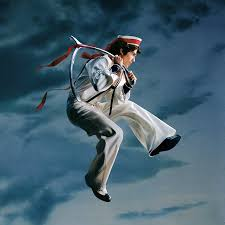
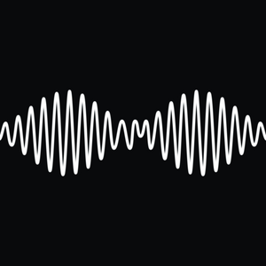

Do That Again

I Barely Know Her
you seem pretty sad for a girl so in love
locket

Wishbone

AM
Do That Again by Malcolm Todd is an alt-R&B and indie-pop album relased in June 2026. It explores the messy realities of heartbreak, young love, and newfound fame. The record blends guitar riffs, electronic synthesizers, and bedroom-pop.
About the Artist
Malcolm Todd is an American singer-songwriter, musician, and record producer. He gained viral fame on TikTok with hit singles like "Art House" and "Roommates", leading to a recod deal with Columbia Records. His sound blends indie pop and alternative R&B.
I Barely Know Her is the breakout 2025 debut album by American singer-songwriter sombr. Combine alt-pop, indie rock, and bedroom pop, the 10-track records acts as a snapshot of young love. Entirely written by sombr and co-produced with Tony Berg, the album explores the messy, blurry lines between friendship and romance.
About the Artist
sombr is the stage name of Shane Michael Boose, an American singer, songwriter, and multi-instrumentalist. He rose to international fame after his hit tracks like "back to friends" and "undressed" went viral on social media. He is celebrated for his introspective, bedroom-pop and indie-rock sound.
you seem pretty sad for a girl so in love is the third studio album by American singer-songwriter Olivia Rodrigo, released on June 12, 2026. It is a narrative-driven concept album that explores the chronological journey of a real-life romance, starting with the butterflies of falling in love and ending with the heartbreaking dismantling of the relationship.
About the Artist
Olivia Rodrigo is an American singer-songwriter and actress. She rose to fame through starring roles on Disney Channel. Her transition to global music stardom began in 2021 with the release of her record-breaking, chart-topping hit single "Drivers License."
locket is the third studio album by American singer-songwriter Madison Beer, released on January 16, 2026, by Epic Records and Sing It Loud. Blending pop and R&B, it explores themes of heartbreak, self-reflection, and healing. The project features the hit singles "Make You Mine", "Bittersweet", and "Bad Enough", and spawned a 2026 arena tour. A deluxe version of the album came out recently!
About the Artist
Madison Elle Beer is an American singer-songwriter and author. She initially gained media attention in 2012 after pop star Justin Bieber shared a video of her covering a song on YouTube. Since then, she has released multiple highly acclaimed albums, inclding the Grammy-nominated Silence Between Songs, and wrote a memoir titled The Half of It.
Wishbone is the fourth studio album by American singer-soongwriter Conan Gray, released on August 15, 2025, through Republic Records. Primarily a pop and pop-rock record, the highly vulnerable diaristic project features tracks exploring past relationships, childhood trauma, and sexuality.
About the Artist
Conan Gray is an American singer, songwriter, and former YouTuber. He rose to fame by uploading original songs and lifestyle vlogs to YouTube as a teenager. Known for his introspective pop and bedroom-pop sound, he signed with Republic Records and has released albums like Kid Krow and Superache.
AM is the fifth studio album by English rock band Arctic Monkeys, released in 2013. Known for hit singles like "Do I Wanna Know?", it blends alternative rock with hip hop and R&B. The album earned widespread acclaim and won British Album of the Year at the 2014 Brit Awards.
About the Artist
Arctic Monkeys are an English rock band formed in Sheffield in 2002. The band consists of Alex Turner, Matt Helders, Jamie Cook, and Nick O'Malley. They gained early fajme in the mid-2000s through the internet and their record-breaking debut album. Over the years, their music style has changed from fast garage rock to slower, more experimental lounge pop.
Do That Again
I Barely Know Her
you seem pretty sad for a girl so in love
locket

Wishbone

AM